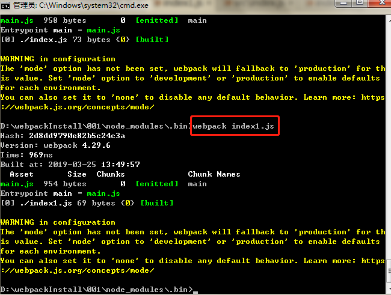

webpack_01
1.新建文件夹001
指令:mkdir 001
2.生成package.json
指令:npm init -y
3.安装webpack
指令:npm install webpack --save-dev

4.打包操作
步骤: 1.将要打包的文件a.js放入001/node_modules/.bin/ 2.然后在该目录执行webpack a.js 3.最后会在001/node_modules/.bin/目录下新生成/dist/main.js文件 4./dist/main.js就最终打包生成的文件